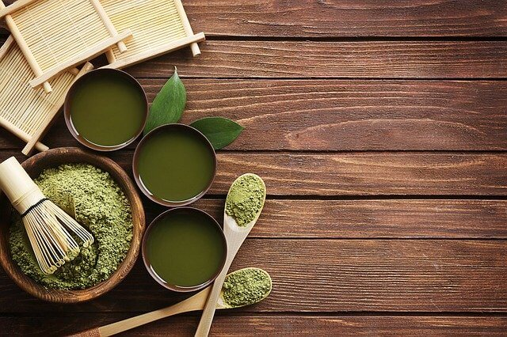
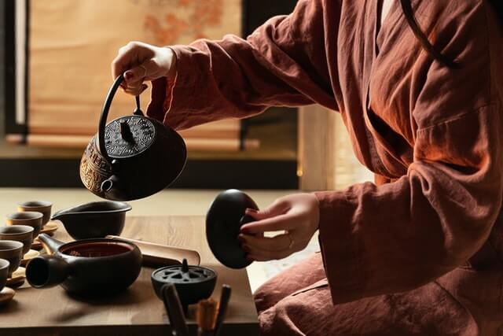

Tea
types of tea

Tea is any leaf produced by the plant "Camellia Sinensis". Within this species there are several varieties but the two that are mostly used to make tea are the Sinensis and Assamica varieties. As you learn more about tea you'll begin to see the significance of these two species and the types of tea they produce, but for now, taking note of which one you are drinking when you try a new tea is a good start!
Now to the good stuff, other than our good-old, breakfast, black tea, what are the different tea varieties, how are they produced and what do they taste like? Well, there are 6 main types of tea and they are as follows: White, black, green, yellow, oolong and post-fermented tea sometimes known as "dark tea". Within these 6 types of tea there are numerous varieties. In terms of taste, you can bet that there is as much variety in tea as there are flavours of Italian ice-cream and potentially more!
While we can't get into all the details of these types and varieties now, below are some clickable resources to start learning and of course you can join our community and sign up to our newsletter for more articles and discussions on the topic of tea types, tasting notes, flavour profiles, how-to-brew guides and more!
Resources:
health
So, what are the health benefits of drinking tea? Firstly, let's talk about the myth that there is less caffeine in tea. Actually, the real reason you don't feel as jittery after a cup of tea is because, along with caffeine, the tea plant is also rich in a compound called L-theanine, which is known to lower blood pressure and give the drinker a calm and clear-minded feeling.
There are numerous health benefits that are associated with L-theanine alone, but most high quality teas contain many other valuable compounds, such as catechins, anitoxidants and polyphenols. According to research, regularly drinking tea containing these compounds can boost metabolism, regulate blood-sugar, reduce blood-pressure, improve skin health, fight against anti-aging as well as mitigate the effects of sun damage. This is not to mention the exciting research coming out of the University of Salford that suggests not only does tea help prevent cancer, but Matcha tea in particular may be able to kill cancer stem cells!
Speaking of Matcha, most people associate health with green tea varieties. While it's true that Matcha probably has the lion's share of health benefits due to the fact that you are actually consuming the leaf, we can assure you that, if like many people, green tea is not to your taste, all tea varieties have similar health benefits and potentially various unknown others, since there has been a lack of research on the health benefits of other varieties thanks to green tea stealing the show somewhat!
Resources:
Read: The Hidden Health Benefits of Tea
tea ceremony
Oftentimes, traditional meditation can feel like a means to an end, intentionally done to get a specific result. It takes effort, and if you have any little demons running around in your mind, it can be uncomfortable. Tea ceremony can offer an effective alternative to meditation which is not so mind-focused. In tea ceremony, there is only making, serving and drinking tea. Yet somehow, without realising, or even trying, one has achieved focused-attention, calmness and inner-peace. And if the atmosphere is right, one can even experience a profound sense of being and a gratitude for life. And all the while, there is a delicious cup of tea waiting for you at the end.
For those who are interested there is much to learn in tea ceremony. There are many different practices, some more formal, some more meditative, some focused on the spiritual principles of Zen Buddhism or Taoism, and some even verging on the informal and social styles. There are regional differences and within those, there are different schools with different techniques and styles. There are also various tea implements and teaware that sometimes require quite technical skills to master.
Whether you are simply curious and wish to learn more, or you wish to start a practice or learn as a hobby, there are some resources below which we hope you will find illuminating. Please join or community for more information and access to courses both online and in person.